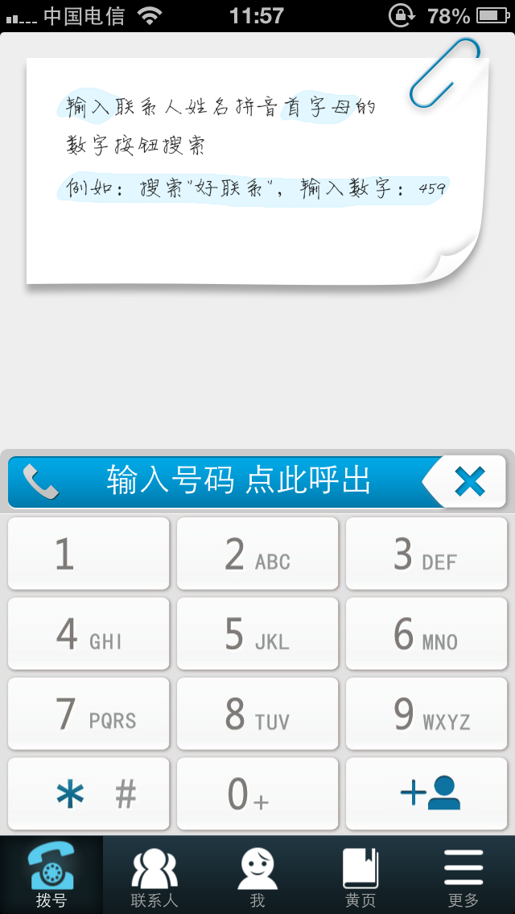

好联系－产品体验报告
19,may,2013好联系是一款以为用户提供“通讯录”服务为基础，进而通过云技术为用户提供方便的电话号码交换与更新解决方案的智能手机APP，支持IOS和Android平台。下载地址：http://www.haolianxi.cn

以下分析基于好联系 V3.1（IOS和Android平台）版本：
优缺点：
1，九宫格键盘。
优点：对于未越狱IOS和原生Android用户，大大提高操作效率。九宫格键盘符合中国用户使用习惯。
缺点：目前好联系的这个九宫格键盘对用户来说只有一个功能－－首字母查找联系人并拨号。
2，黄页。
优点：快速导航用户拨打商家电话，可以很方便的解决用户的生活需求，也是未来的一个大趋势。
缺点：
（1）信息排列顺序混乱。
对于某一特定类型的黄页信息，排列顺序混乱，用户无法快速找到需要的号码。
（2）信息优化不够。
同一公司的两个号码会分开显示并且没有注明有什么不同，困扰用户，降低用户使用可能。
（3）信息缺少必要的说明。
所提供的电话号码没有任何说明，查到的号码可能是业务电话、客服电话、维修电话，当用户搞不清楚的时候往往会放弃使用转而用别的方式查询号码。
3，云名片。
优点：大势所趋。目前，包括PayPal在内的多家公司组成了快速在线身份验证联盟，通过各种软硬件技术实现身份验证，账户密码这种验证方式将逐渐消亡。相信手机号码、邮箱地址等名片信息在将来也将消失，云名片和好友圈都是很好的概念，不但为好联系加入了社交元素，同时也是产品推广的一个方式。
缺点：在产品初期，没有巨大用户基数和很好的用户信任度的阶段，云名片分享和好友圈的概念难以被用户接受，对于没有下载安装好联系的用户需要下载安装注册后才能使用，并且把联系人信息保存在一个APP中也会有丢失的可能。这样两个得不到用户认可的功能，会直接导致用户对好联系本身的不认可。而且这两个不太可用的功能在用户指导和UI中放在主要位置会困扰用户，用户看不到好联系对他来说到底有什么大的用处，降低使用的可能。（用户对这个两个功能的使用情景在分析最后进行了具体描述）
建议：
总体来说，要加强九宫格键盘的功能和黄页的信息优化，并且把两者做一个结合。云名片和好友圈的功能保留但在用户指导和UI中进行弱化，在获得大量用户和提高用户信任度之后再进行推广。在初期加强推广好联系的通讯录和黄页功能，把好联系定位为一个“用户手中的通讯管家”，加强本地功能，保留但弱化云的概念。
具体来说：
1，九宫格拨号键盘。
（1）导入黄页信息，并根据用户地理位置、行业排名、用户口碑和使用记录进行优化，使用户可以使用首字母在拨号键盘直接查询要找的黄页信息。
（2）添加使用九宫格输入法，在好联系内部编辑短信后，通过剪贴板粘贴至系统短信，然后发送。
（3）添加按键声音反馈。
2，黄页。
（1）集成在九宫格拨号键盘内，用户可以通过公司首字母查询电话。
（2）保留黄页查询板块，满足用户不明确要使用某行业内哪家具体公司服务时的查询需求。
（3）优化黄页信息排列顺序，按照地理位置、行业排名、用户口碑和使用记录等等因素进行排列顺序的优化。
（4）整合黄页信息。同一公司的不同电话放在同一条目下。
（5）为电话号码提供必要的说明信息，注明是业务电话、客服电话、还是维修电话等等。
3，云名片和好友圈
（1）保留这两项功能，但要弱化它们在用户指导和UI中的位置。
（2）加强视觉设计，通过好的设计提高用户对好联系的信任感，进而降低用户使用这些功能的心理成本。
具体描述为什么用户不会使用云名片和好友圈？
云名片和好友圈都是很好的想法，将来一定会是一个大的趋势，但是这需要建立在APP拥有巨大用户量的基础上。在现阶段估计只有很少的用户会使用这两个功能，因为这两个功能需要两个或多个用户同时安装好联系并且注册帐号才可以实现。虽然可以使用短信邀请的方式，但是对于一个不知名的APP，邀请别人和接受别人邀请都需要一定的心理成本。并且在用户基数不够的时候，用好联系达到交换联系方式的目的其实是很麻烦的。用户原本只需要通过任何联系方式（口头交换、更换号码通过短信电话QQ等方式通知朋友、向共同朋友索要等等）交换号码就好，使用好联系却需要推荐朋友下载安装好联系，然后注册帐号最后绕一个大圈子来分享名片；如果双方都安装了好联系则比较方便，如果不是则对用户来说非常多此一举。最后即使分享成功，把自己的所有联系人信息都存在一个APP中甚至是云上，如果信息丢失或是不再使用这个APP，都会产生很麻烦的问题；如果通过好联系分享名片后，为了防止丢失一定要存到本地，那还不如使用最直接的方式交换号码。云名片和好友圈的更好的策略应该是在APP通过别的产品功能获得了非常巨大的用户量和很好的用户信任度的基础上，再引导用户使用这两个功能，在初期推出只会让用户非常困惑，并且降低对APP的好感。
分析后，对这个问题列出如下几个原因：
1，好联系不是大公司产品，品牌认可度和用户信任度不够。
2，用户的多数联系人不是好联系用户，使用这两个功能需要下载安装好联系，注册帐号，向好联系提供通讯录信息；对用户来说麻烦而且需要提供隐私信息的心理成本。
3，用户联系人信息存在一个APP里，如果信息丢失或者不打算继续使用APP也会给用户带来很麻烦的问题。
另外两个严重影响体验的小问题：
1，拨号按键没有声音反馈。
2，IOS版本中，批量选择联系人之后，没有任何可供选择的功能。